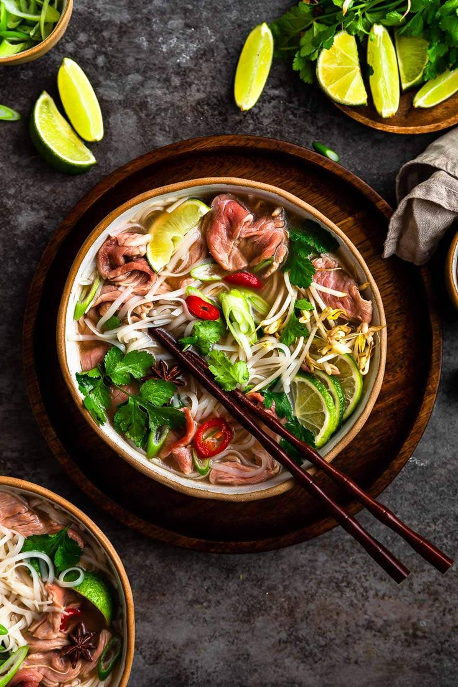

Pho
Origem: Vietnã
Símbolo da cozinha vietnamita, o pho é uma comida popular de rua super leve e aromática, consumida até mesmo no café da manhã pelos moradores da região. O prato chama atenção pelos ingredientes exóticos, nada comuns para os países do ocidente, e pela combinação entre sabores agridoce e apimentados. A sopa leva macarrão de arroz e fatias bem finas de carne, que normalmente é servida crua e acaba cozinhando na própria sopa, pouco antes de ir à mesa. Nossa escolha para esse prato foi o filé mignon, uma carne extremamente macia e saborosa, que complementa perfeitamente essa receita incrível do dia a dia vietnamita.
Em uma panela grande em fogo médio, leve as aparas de carne e deixe até dourar levemente. Enquanto a carne estiver dourando, toste a cebola e o gengibre em uma frigideira grossa até que fiquem com a superfície bem escura. Adicione a cebola e o gengibre à carne e despeje a água fervente. Na mesma frigideira, dê uma leve tostada na canela, anis, cardamomo e as sementes de coentro por 5 minutos. Adicione-os ao caldo junto com o açúcar, o sal e o molho de peixe. Deixe o caldo apurar em fogo baixo por 2 horas, sempre verificando e repondo a água para não secar. Ao término desse período, coe o caldo com uma peneira com um pano descartável sobre ela para retirar as impurezas e obter um caldo bem límpido. Reserve aquecido em outra panela. Em uma tigela grande onde será servido o Pho, disponha metade do macarrão de arroz pré cozido, a carne por cima disposta organizada ao lado do macarrão, distribua por cima a pimenta, o manjericão e o coentro e despeje o caldo fervente por cima. Tampe a tigela por 5 minutos e sirva em seguida com o molho Hoisin e a pimenta Sriracha à parte.